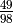
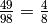
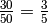

Digit canceling fractions¶
Problem 33
The fraction  is a curious fraction, as an inexperienced mathematician in attempting to simplify it may incorrectly believe that , which is correct, is obtained by cancelling the 9s.
We shall consider fractions like, , to be trivial examples.
There are exactly four non-trivial examples of this type of fraction, less than one in value, and containing two digits in the numerator and denominator.
If the product of these four fractions is given in its lowest common terms, find the value of the denominator.
Solution
Use euler04.digits() and euler05.prod().
from euler04 import digits
from euler05 import prod
Greatest Common Divisor to locate way to properly reduce a fraction.
def gcd( p, q ):
"""Greatest ommon divisor between p and q.
>>> from euler33 import gcd
>>> gcd( 49, 98 )
49
>>> gcd( 4, 8 )
4
"""
if p == q:
return p
elif p > q:
return gcd( p-q, q )
else:
assert q > p
return gcd( q-p, p )
Digit Cancellation of two sequences of digits. Locates one common digit and excises it, if possible.
def cancelDigits( da, db ):
"""For two sequences of digits, locate a common digit.
>>> from euler33 import cancelDigits
>>> cancelDigits( (4, 9), (9, 8) )
((4,), (8,))
>>> cancelDigits( digits(49), digits(98) )
([4], [8])
"""
for i, d in enumerate(da):
if d in db:
j = db.index(d)
return da[:i]+da[i+1:], db[:j]+db[j+1:]
return da, db
Compare digit cancellation with proper reduction for numbers in the given range: [11 to 99], inclusive
def genUnorthodoxCancels():
"""Compare digit cancellation and proper fraction reduction.
>>> from euler33 import genUnorthodoxCancels
>>> list( genUnorthodoxCancels() )
[(16, 64), (26, 65), (19, 95), (49, 98)]
"""
for d in range(11,100):
for n in range(11,d):
dn, dd = digits(n), digits(d)
if dn[1] == 0 or dd[1] == 0: continue
n2, d2 = cancelDigits(dn,dd)
if dn == n2: continue # No improper digit cancellation
r= gcd(n,d)
r2= gcd(n2[0],d2[0])
if n//r == n2[0]//r2 and d//r == d2[0]//r2:
#print( n, d, n2, d2 )
yield n, d
Test the components in this module.
def test():
import doctest
doctest.testmod(verbose=0)
Compute the answer.
def answer():
n, d = 1, 1
for fn, fd in genUnorthodoxCancels():
n, d = n*fn, d*fd
r= gcd( n, d )
#print( n//r, d//r )
return d//r
Confirm the answer.
def confirm( ans ):
assert ans == 100, "{0!r} Incorrect".format(ans)
Create some output.
if __name__ == "__main__":
test()
ans= answer()
confirm( ans )
print( "The denominator of the product of the four fractions that can be cancelled in an unorthodox way:", ans )